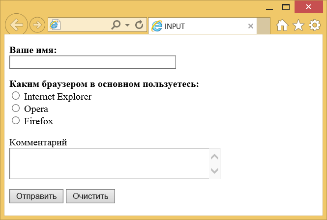

Элемент <input>
| Internet Explorer | Chrome | Opera | Safari | Firefox |
| 2 | 1 | 1 | 1 | 1 |
| Android | Firefox Mobile | Opera Mobile | Safari Mobile |
| 1 | 1 | 6 | 1 |
<input> является одним из разносторонних элементов формы и позволяет создавать разные части интерфейса и обеспечивать взаимодействие с пользователем. Главным образом <input> предназначен для создания текстовых полей, различных кнопок, переключателей и флажков. Хотя элемент <input> не требуется помещать внутрь контейнера <form>, определяющего форму, но если введенные пользователем данные должны быть отправлены на сервер, где их обрабатывает серверная программа, то указывать <form> обязательно. То же самое обстоит и в случае обработки данных с помощью клиентских приложений, например, скриптов на языке JavaScript.
Основной атрибут <input>, определяющий вид элемента — type. Он позволяет задавать следующие элементы формы: текстовое поле (text), поле с паролем (password), переключатель (radio), флажок (checkbox), скрытое поле (hidden), кнопка (button), кнопка для отправки формы (submit), кнопка для очистки формы (reset), поле для отправки файла (file), кнопка с изображением (image) и др. Для каждого элемента существует свой список атрибутов, которые определяют его вид и характеристики. Кроме того, в HTML5 добавлено еще более десятка новых элементов.
Синтаксис
<input атрибуты>Закрывающий тег
Аттрибуты
- accept
- Устанавливает фильтр на типы файлов, которые вы можете отправить через поле загрузки файлов.
- align
- Определяет выравнивание изображения.
- alt
- Альтернативный текст для кнопки с изображением.
- autocomplete
- Включает или отключает автозаполнение.
- autofocus
- Устанавливает фокус в поле формы.
- border
- Толщина рамки вокруг изображения.
- checked
- Предварительно активированный переключатель или флажок.
- disabled
- Блокирует доступ и изменение элемента.
- form
- Связывает поле с формой по её идентификатору.
- formaction
- Определяет адрес обработчика формы.
- formenctype
- Устанавливает способ кодирования данных формы при их отправке на сервер.
- formmethod
- Сообщает браузеру каким методом следует передавать данные формы на сервер.
- formnovalidate
- Отменяет встроенную проверку данных на корректность.
- formtarget
- Определяет окно или фрейм в которое будет загружаться результат, возвращаемый обработчиком формы.
- list
- Указывает на список вариантов, которые можно выбирать при вводе текста.
- max
- Верхнее значение для ввода числа или даты.
- maxlength
- Максимальное количество символов разрешённых в тексте.
- min
- Нижнее значение для ввода числа или даты.
- multiple
- Позволяет загрузить несколько файлов одновременно.
- name
- Имя поля, предназначено для того, чтобы обработчик формы мог его идентифицировать.
- pattern
- Устанавливает шаблон ввода.
- placeholder
- Выводит подсказывающий текст.
- readonly
- Устанавливает, что поле не может изменяться пользователем.
- required
- Обязательное для заполнения поле.
- size
- Ширина текстового поля.
- src
- Адрес графического файла для поля с изображением.
- step
- Шаг приращения для числовых полей.
- type
- Сообщает браузеру, к какому типу относится элемент формы.
- value
- Значение элемента.
Также для этого элемента доступны универсальные атрибуты и события.
Пример
<!DOCTYPE HTML>
<html>
<head>
<meta charset="utf-8">
<title>INPUT</title>
</head>
<body>
<form name="test" method="post" action="input1.php">
<p><b>Ваше имя:</b><br>
<input type="text" size="40">
</p>
<p><b>Каким браузером в основном пользуетесь:</b><Br>
<input type="radio" name="browser" value="ie"> Internet Explorer<Br>
<input type="radio" name="browser" value="opera"> Opera<Br>
<input type="radio" name="browser" value="firefox"> Firefox<Br>
</p>
<p>Комментарий<Br>
<textarea name="comment" cols="40" rows="3"></textarea></p>
<p><input type="submit" value="Отправить">
<input type="reset" value="Очистить"></p>
</form>
</body>
</html>Результат данного примера показан на рис. 1.

Рис. 1. Вид элементов формы в браузере
Спецификация ?
| Спецификация | Статус |
|---|---|
| WHATWG HTML Living Standard | Живой стандарт |
| HTML5 | Рекомендация |
| HTML 4.01 Specification | Рекомендация |
Спецификация
Каждая спецификация проходит несколько стадий одобрения.
- Recommendation (Рекомендация) — спецификация одобрена W3C и рекомендована как стандарт.
- Candidate Recommendation (Возможная рекомендация) — группа, отвечающая за стандарт, удовлетворена, как он соответствует своим целям, но требуется помощь сообщества разработчиков по реализации стандарта.
- Proposed Recommendation (Предлагаемая рекомендация) — на этом этапе документ представлен на рассмотрение Консультативного совета W3C для окончательного утверждения.
- Working Draft (Рабочий проект) — более зрелая версия черновика после обсуждения и внесения поправок для рассмотрения сообществом.
- Editorʼs draft (Редакторский черновик) — черновая версия стандарта после внесения правок редакторами проекта.
- Draft (Черновик спецификации) — первая черновая версия стандарта.
Особняком стоит живой стандарт HTML (Living) — он не придерживается традиционной нумерации версий, поскольку находится в постоянной разработке и обновляется регулярно.